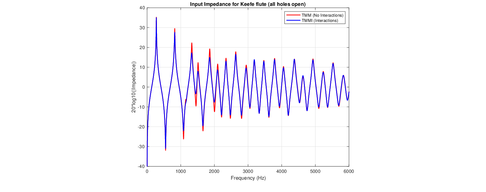

The traditional TMM approach for toneholes ignores possible external interactions between open holes.
An approach that accounts for these interactions was reported in (Kergomard, 1989).
Lefebvre et al. (2013) compared the technique to FEM and measurement results and then investigated the importance of the effect in common woodwind instruments.
The Matlab script tmmi.m implements the scheme documented in (Lefebvre et al., 2013).
Figure 13:
Impedance magnitude for six-hole flute (all holes open) defined in (Keefe, 1990): TMM vs. TMMI (see example7.m script).

Presented at the 180th Meeting of the Acoustical Society of America, 8-10 June 2021 by Gary P. Scavone.